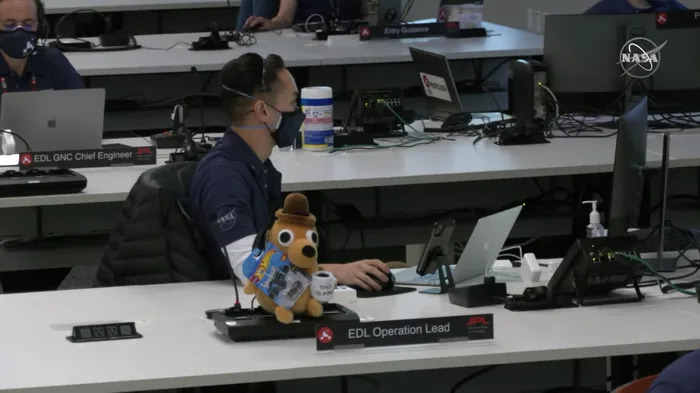
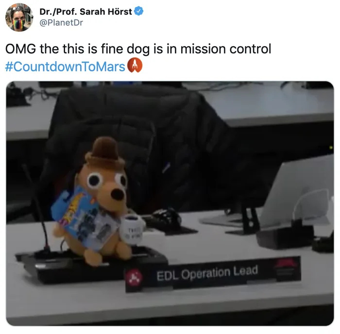

Dear ShannonG,
First of all — congratulations, Architect! 🎓🖋️
You did it. You survived sleepless nights, mountains of plates, towers of coffee cups, healthy eye bags and probably ang pagiging lutang madalas dahil sa puyat. You're now officially a BS Architecture graduate — and I hope you realize how amazing that is, because this course definitely isn’t for the weak.
Along with this letter, I hope you appreciate this small but meaningful gift — a ‘This is Fine’ dog plushie, attached to the flowers. You might remember it from our DRRM class way back in Grade 12. Nasa presentation slide ninyo ito, and using the dog was clever. The tiny fire-dog meme may have been a silly class reference back then, but over the years, it stuck with me in an oddly comforting way.
During the pandemic, I came across a viral picture of a NASA employee — who, to my surprise, turned out to be a former SLU student — and there it was: the same plushie sitting on his desk.   At first I found it funny, but then it hit me. That little dog, calmly sipping coffee while the world is on fire, actually speaks volumes. It’s a quiet reminder that even when life gets overwhelming — with burnout, pressure, mental health struggles, and the constant urge to “keep going” — it’s okay to feel things, and it’s okay to pause. It became a symbol of resilience, humor, and quiet strength. And ever since then, I kept thinking, “I really want to give this to Shannon someday.”
Ayerns... someday is today. 😅
Hopefully, you do me a favor uwuuu. I hope it finds a spot in your future office — a tiny fire-dog guardian who'll remind you to breathe, laugh, and power through the chaos.
On a more personal note, I just want to say thank you — sincerely. You’ve been an inspiration in more ways than you probably realize❤️ You were my quiet motivation to do better waaay back Grade 7— not just in academics, but in how I carried myself, and even in how I grew spiritually. Because of that, I was able to finish strong, even graduating with flying colors — something I honestly didn’t expect. A big part of that drive, I owe to you.
Ayaw ko makita ninyo ang cheesy side ko legit hahahaha. I don’t want this letter to be dramatic, but hey — life is a little dramatic sometimes. So thank you, Shannong. For being you.
Praying for all the best in your journey ahead — may your blueprints be flawless, your models top-notch, and your clients not be last-minute changers. 😄
With all my heart,
Ades L